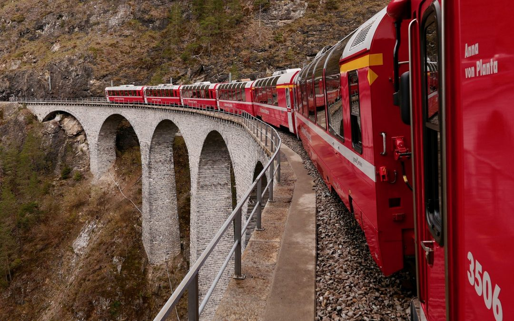

Alla scoperta del Canton Grigioni
da Lara Taverna
| Ago 3, 2019 |
Blog
Il Trenino del Bernina offre continuamente tanti spunti di viaggio per scoprire al meglio la regione tra l’Italia e la Svizzera, in particolare il Canton Grigioni, i suoi paesaggi, la storia e la bellezza di questi posti. Ogni fermata è unica e differente, così come i suoi dintorni, accessibili facilmente dalle stazioni grazie a percorsi segnalati, funivie, navette e la stesso prolungamento della linea ferroviaria.
La Gola di Zügen, o Zügenschlucht, per esempio, nel Canton Grigioni, è ben collegata dalla Ferrovia engadinese, che allunga il tragitto del Bernina Express con la linea Davos – Filisur. Questo tratto, ricco di gallerie e spettacolari panorami, vanta il viadotto Landwasser, Patrimonio Unesco, nella distanza Monstein – Wiesen, e l’antico sentiero oggi chiuso al traffico ma ideale per grandi e piccoli nella prima parte e più adatto agli escursionisti nella fine.
Canton Grigioni, l’unica strada della valle
Da maggio ad ottobre 2019 la Ferrovia Retica offre l’opportunità di viaggiare lungo la tratta Davos – Filisur, nel Canton Grigioni a bordo di storiche e caratteristiche carrozze anni ‘20. Un viaggio di circa quaranta minuti che attraversa la Gola di Zügen e viadotti spettacolari che regala panorami e atmosfere romantiche e selvagge. Un itinerario nostalgico ed emozionante al prezzo di un normale biglietto del treno che teletrasporta indietro nel tempo, alle origini della linea ferroviaria, illustrando la sua storia ed evoluzione.

Nel 1974 è stato inaugurato il tunnel Landwasser nel Canton Grigioni, lasciando l’antica strada della valle come un percorso pedonale e ciclistico, didattico e naturalistico lungo le rocce della Gola di Zügen, nota per i suoi millenari canali valangari, resti di neve visibili soprattutto in estate. La passeggiata, della durata di circa un’ora, parte dalla stazione di Monstein, fermata a richiesta della linea retica. Dal Museo dell’Industria Mineraria, adiacente ad un punto di ristoro, dirigetevi a sinistra e iniziate il vostro cammino lungo la vecchia strada cantonale fino alla gola, e poi in direzione Wiesen. Il museo minerario, la Miniera Silberberg, è un’ottima tappa per avere una visione completa sul territorio. Il museo consente di arrivare nelle profondità del sottosuolo e illustra la storia dell’estrazione mineraria locale, con documenti autentici, attrezzi ed utensili, fotografie e minerali proveniente dall’intera zona del Cantone Grigioni.
Superando il Landwasser, si arriva al Kanzeli e alla valle di Albula e, continuando a sinistra oltre il ruscello, si giunge alla stazione di Wiesen. Da qui si può tornare indietro o continuare attraversare la gola, percorso consigliato ai più coraggiosi e agli esperti marciatori e ciclisti, date le grandi altezze. Il ponte, lungo più di 200 metri, oltrepassa la spaccatura stretta e maestosa, profonda circa 90 metri. Arrivati sul lato opposto della valle si giunge poi a Davos.
L’antico sentiero cantonale del Canton Grigioni simboleggia millenni di evoluzione geologica, di formazioni geologiche uniche che hanno permesso lo sviluppo dell’area con le numerose miniere d’argento a 1650 metri d’altezza. Durante tutto il tragitto, non privo di salite, ripide discese e terreni scoscesi, si attraversano boschi, ruscelli, cascate, punti panoramici, ci si immerge in una natura genuina, interrotta solo dal rumore saltuario del Trenino Rosso, che sfreccia in alto lungo la nuova ferrovia.
Canton Grigioni: viaggiare sulla Gola di Zügen su carrozze storiche
Da maggio ad ottobre 2019 la Ferrovia Retica offre l’opportunità di viaggiare lungo la tratta Davos – Filisur, nel Canton Grigioni a bordo di storiche e caratteristiche carrozze anni ‘20. Un viaggio di circa quaranta minuti che attraversa la Gola di Zügen e viadotti spettacolari che regala panorami e atmosfere romantiche e selvagge. Un itinerario nostalgico ed emozionante al prezzo di un normale biglietto del treno che teletrasporta indietro nel tempo, alle origini della linea ferroviaria, illustrando la sua storia ed evoluzione.
L’antico treno, infatti, rappresenta un modello di opera ingegneristica, pensato appositamente per superare le asperità del terreno, curve particolari e altezze significative. Le carrozze, in legno, gialle e panoramiche (“a cupola vetrata” o totalmente scoperta), tempo permettendo, sono trainate dall’originaria locomotiva Coccodrillo ed effettuano due corse giornaliere in entrambe le direzioni, mattina e pomeriggio.
La brezza di montagna e la vista mozzafiato regalano ai viaggiatori un’esperienza indimenticabile nel Canton Grigioni, una regione ricca di sorprese e avventure in ogni angolo, in ogni versante, ogni ruscello e lago.